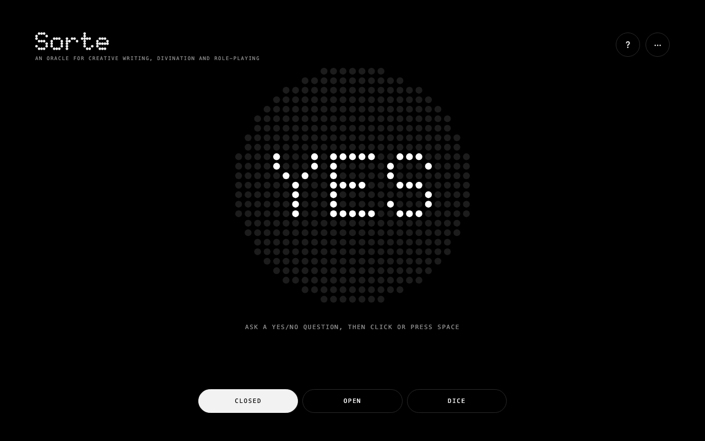

Sorte
An oracle for creative writing, divination and role-playing. Three tools, one small light on your phone.

Closed Oracle
For questions you can answer with a yes or a no. A small cloud falls onto hot stones, turns to rain, then to steam, and rises again leaving the answer.
The cloud runs backwards through the cycle that made it, and rises again, over and over.
The “but” arrives after a breath. A nod to the Pythia of Delphi, who answered above the vapours rising from the earth.
Open Oracle
For open questions, the ones a yes or no can't answer: who, what, how. A little flame catches the paper; what the fire leaves behind is a symbol to read.

Dice
From d4 to d100, drawn as silhouettes. Turn the phone over and shake it like a dice cup; while charging, lift one edge and set it back down.
Sounds of resin dice on felt. The highest roll lights up its edge; a 1 leaves the shape hollow.

The deck
The symbols come from the drawings of Mattia Giordano and from his personal oracle deck, which exists as a physical object. He draws in dots: images that vanish from afar and only reveal themselves up close. On the matrix, a drawn dot becomes a point of light.
App & widgets
Sorte is a free app for Android, with three round widgets for your home screen: tap one and ask.
On Nothing Phone (3) and Phone (4a) Pro the three tools also live on the back as Glyph Toys, using the light matrix.
In your browser
On iPhone, iPad and any computer, Sorte opens in the browser, with the same three tools, animations and sounds. Tap or click the circle, or press the space bar; on iPhone you can also shake.
Added to your home screen, it opens full screen like an app and works offline too.

Features
Glyph Toys (on Nothing Phone (3) and (4a) Pro)
- 🌫️Closed Oracle. For questions you can answer with a yes or a no: a small cloud falls onto hot stones, turns to rain, then to steam, and rises again with the answer.
- 🔥Open Oracle. A little flame burns the paper, and what the fire leaves behind is a symbol to read.
- 🎲Dice. From d4 to d100, drawn as silhouettes that tumble and settle on the table.
Oracle Deck
- 🃏Twelve symbols from Mattia Giordano's personal oracle deck, drawn in dots.
Interactions
- 🔘Long press the Glyph Button to ask, or shake the phone face down.
- 🔌While charging, lift one edge of the phone slightly and set it back down: the die falls.
- ⏳The “but” arrives after a breath, so you never know straight away whether an answer is clean.
Widgets
- ⚪Three round widgets for your home screen. Tap to ask; tap the edges of the dice widget to change die.
Everywhere
- 📱A regular app on any Android 10+, in English and Italian.
- 🌐A web version for iPhone, iPad and any computer. Add it to your home screen and it works offline.
Privacy
- 🔒No data collected or sold, no ads, no tracking. Works offline.
Glyph Toys (su Nothing Phone (3) e (4a) Pro)
- 🌫️Oracolo chiuso. Per le domande a cui si risponde sì o no: una piccola nuvola cade sulle pietre calde, si fa pioggia, poi vapore, e risale con la risposta.
- 🔥Oracolo aperto. Una fiammella brucia la carta, e quello che il fuoco lascia è un simbolo da leggere.
- 🎲Dadi. Dal d4 al d100, disegnati come sagome che rotolano e si posano sul tavolo.
Il mazzo
- 🃏Dodici simboli dal mazzo oracolare personale di Mattia Giordano, disegnati a puntini.
Interazioni
- 🔘Pressione lunga sul Glyph Button per chiedere, oppure scuoti il telefono a faccia in giù.
- 🔌In carica, solleva leggermente un lato del telefono e riappoggialo: il dado cade.
- ⏳Il «ma» arriva dopo un respiro: non sai subito se la risposta è netta.
Widget
- ⚪Tre widget tondi per la schermata Home. Tocca e chiedi; nel widget dei dadi tocca i bordi per cambiare dado.
Ovunque
- 📱App per ogni Android 10+, in italiano e in inglese.
- 🌐Una versione web per iPhone, iPad e qualsiasi computer. Aggiungila alla schermata Home e funziona anche offline.
Privacy
- 🔒Nessun dato raccolto né venduto, niente pubblicità né tracciamento. Funziona offline.